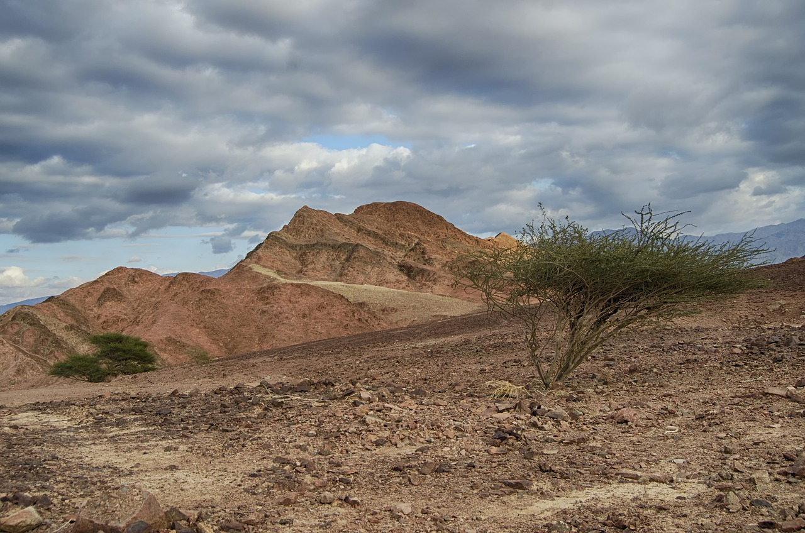
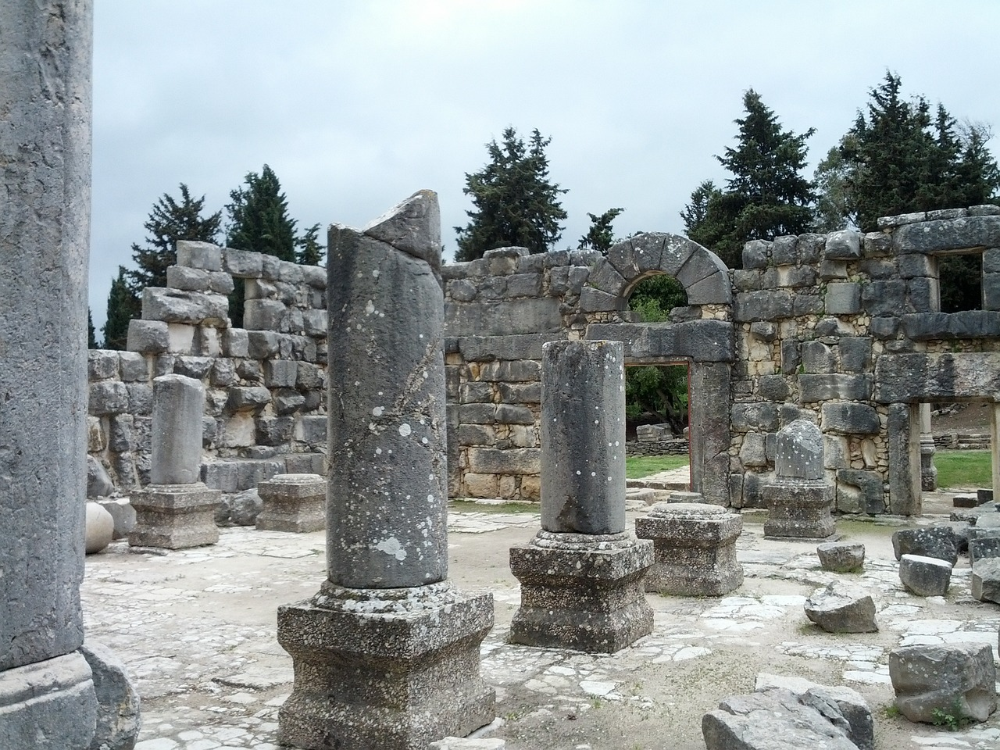
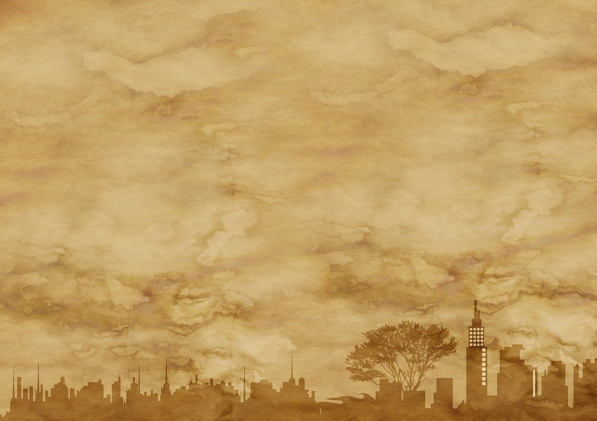
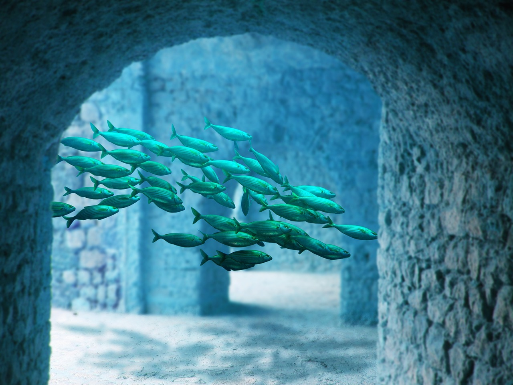

אטלס המצפן
אסופת תיעודים של ערים, אומות, צמחים ובעלי חיים המרכיבים את העולם המופלא הזה
העולם
המזרח התיכון
תל ציון, ישראל
ממוקמת דרומית בין באר שבע לסיני. נחשבת מרכז טכנולוגי עבור החבורה של פלאדין.
מבצר פיטר הקדוש
מבצר צלבני הממוקם במזרח הגליל (על יד רמת הגולן), משמש לעתים מקום מפגש של החבורה.
העיר התחתית, תל אביב-יפו
אזור תת-קרקעי הנמצא בתעלות הביוב של תל אביב, ומיושב על ידי שבט יצורים הנחשבים כ-"פרטצ'ים".
הרצליה
בניין אטלס
בניין עסקים השייך לוולטאז', הממוקם בדרום אזור התעשייה של העיר.
פנינת המזרח
מסעדה אסייתית השייכת לאדון נוין, שהגיע לישראל כפליט מוייטנאם. אחת מהמסעדות האהובות על החבורה.
ארצות הברית
פייפר פארק, דלאוור
עיר מסתורית שנחשבת לרוב האנשים כ"עיר על הנייר", אבל בפועל היא משמשת כבית עבור מכשפים.
מזרח אירופה
דארקויה
חבל ארץ הממוקם במזרח אירופה (על גבול רומניה-הונגריה), מאוכלס ברובו על ידי צוענים.
אקטלבה
ממוקמת במזרח אירופה בין בלארוס לפולין, בעלת ברית חשובה של איראן, נחשבת כמקלט למבוקשים.
האיים הקאריביים
סונדיאנו
אי עשיר הנמצא באיים הקאריביים, נשלט על ידי משפחת המלוכה של האי.
האוקיינוס האטלנטי
סאבלניה
רפובליקה חזקה הנמצאת בתחתית האוקיינוס האטלנטי. נשלטת על ידי מועצת העליונים.
מזרח אסיה
דרגון-לה
חבל ארץ הנמצא בין סין לטיבט, נשלט על ידי מסדר לוחמי הדרקון.

האוקיינוס השקט
פאסיפיה
פדרציית איים הנמצאת בלב האוקיינוס השקט. ממוקמת 15 אלף ק"מ מאיי הוואי.

מיני העולם
בני האדם
הומו סאפיינס. הגזע השולט בכדור הארץ.
ילדי פריים
הומו מיראביליס. דור חדש של ילדים שנולדו עם תחילת שנת 2000 שהתגלה אצלם גן נדיר היכול לפתח כוחות על.
אנשי ים
הומו אקווריוס. המין הדמוי-אנוש היחידי שחי באוקיינוסים. מין זה מאופיין עם וריאציות גופניות שונות: דמוי-אנוש, בנות ים, אנשי דג ועוד...
המצאות וחידושים
ג'ברווקי
מטוס סילון X61, הידוע גם בכינויו הג'ברווקי (על שם היצור מאליס בארץ הפלאות), משמש לעיתים ככלי התחבורה האווירי של חבורת פלאדין.
הצב
צוללת ענקית הנמצאת בבעלות החבורה והאחדות העולמית, משמשת למשימות חילוץ וחקר תת-ימיות.
ווק-טום
מכשיר קשר היכול ליצור הסוואה הולוגרמית לפי בחירותיו של המשתמש.
כדורי מוביוס
כדורי הרגעה לסובלים מהתקפי חרדה. הכדורים גורמים תחושת אשליה דמיונית לנוטלים אותה.
שער ביפרוסט
מכונה קוונטית היכולה ליצור שערים בין ממדיים הנפתחים בצד אחר הנמצא איפשהו בעולם.